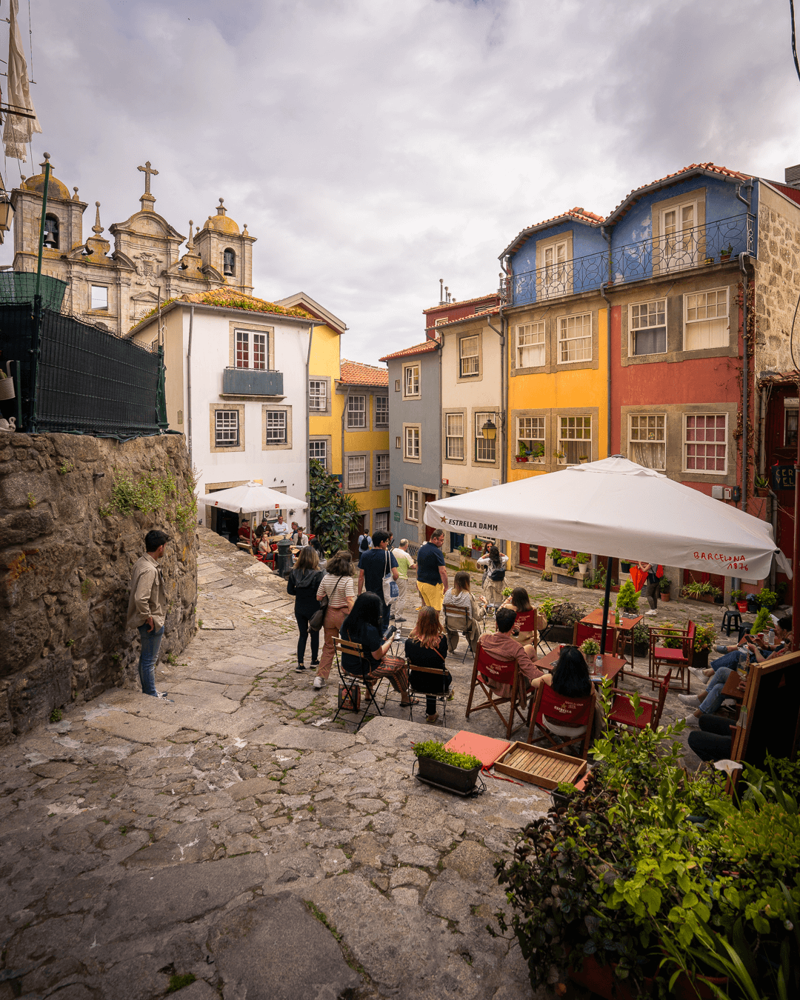

Limited Time Offer
Launch Price: €9.99 €14.99
Your Photography Adventure Awaits!
0
amazing spots
Languages Available
 English
English
 Spanish
Spanish
 French
French
 Portuguese
Portuguese
Why Choose This Guide?
- Uses Google Maps for easy navigation.
- 77 points with descriptions in English, Spanish, French, and Portuguese.
- Tailored for photographers with the best times and seasons to shoot.
- Includes example photos for inspiration at each location.
- Custom paths to remote spots created by the author.
- Lifetime access and free updates.
Photo Highlights
Example Photos from the Guide

Frequently Asked Questions
The Porto Photography Guide is a self-guided map that helps you capture the best of Porto's beauty with curated locations and photography tips.
Once you purchase the guide, you'll receive an instant download link to access it on any device.
The guide is available in English, Spanish, French, and Portuguese.
Yes, the guide is perfect for photographers of all levels, offering easy-to-follow instructions and inspiration for each location.